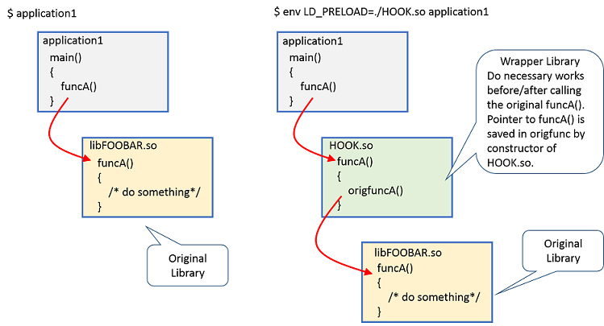

これまでqiitaやらblogspotに記事を書いてきた記事をここに集約するシリーズ。
今日は2017年にqiitaに書いた記事。 前にここに移植したこの記事の続きです。
イントロ
2013年の3月頃にこんな記事を書いたのを思い出したのだが、最近事情でまた動かしてみたら気づいたことがあったのでメモ。
「GNU ld の--no-as-neededと--as-neededオプションについて」
最初によくわかっている方向けの言い訳^H^H^H説明をしておくと、上記はLD_PRELOADを使って hook を行う場合に準備する shared object を作る際に使用するリンカ(GNU ld)の挙動がUbuntu 12.04 前後で若干変更され、ld の option 指定に注意が必要になったという話だった。当時は上記記事の例に書いた通りに動いていたのだが、どうも今は少し事情が変わっているらしいという話である。
まず、やりたいことはこの記事のタイトルの通りである。各種事情により、system call (やlibrary関数)の処理を入り口で横取り(hook)して動きを変えたいことがある。私がこれまで経験した中では、こんな用途があった。 以下、すべて「元のプログラムには手を加えない」という前提である。
- socket API で通信するアプリケーションを、InfiniBand のSDPプロトコルを使って、内部通信処理を横取りして高速化したい。
- アプリケーションが作成するTCPコネクションのオプションを、接続先によって変更したい。
- 外部から提供されたライブラリの挙動に問題があることがわかったが、ソースがないため改修することもできない。問題を起こす関数の処理を横取りして正しいものに差し換えたい。
このような場合、後述するようなshared object (拡張子が .so なファイル。動的リンクライブラリと呼ばれることもある)を作っておいて、プログラム実行時に環境変数 LD_PRELOAD で指定してやると、やりたいことを実現できる。
文章で説明してもわかりにくいと思うので、絵を描いてみた。 以下の図の左側のように動いていたプログラム(application1)の動きを、実行時に右側のように変えるということである。

上図のapplication1 は見ての通り、libFOOBAR.so というライブラリ(shared object)の中の funcA()という関数を使う。(実際のところ、libc.so でもかまわない) やりたいのは、図の右のように、application1 のfuncA()呼び出しを HOOK.so の中の funcA()にすり替え、HOOK.so 版の funcA()の中から前後に必要な処理を行った上で元々の libFOOBAR.so 版の funcA()を呼び出すということである。
hook用shared objectの実際の処理
以下、shared object (上図では HOOK.so)でどんなことをするのか説明する。
構造
hook用shared objectは、大きく以下の3つの要素から構成される。
- 初期化ルーチン(constructor)
- hook関数
- 終了ルーチン(destructor)
初期化ルーチン(constructor)
- main() 関数が呼ばれる前に実行される。
- hook関数で使うために横取り対象関数のポインタを検索して保存しておくことが多い。
- 検索には、dynamic link loader の dlsym() を使う。
hook関数
- 横取りした後の処理を記述する。
- 横取りする関数とまったく同じ名前と型定義で記述する。
- 適当な前処理を行った後で、前述の初期化ルーチンで保存しておいた関数ポインタを使って再び元の関数を呼び出す使い方が多い。たとえば、kernel に渡す前に適当な小細工をしたい場合や、条件に合致しない場合の fallback ルートとしての役割である。図は、このパターンの例である。
終了ルーチン(destructor)
- main() 関数からreturn (or exit) した後に実行される。
- 初期化ルーチンやhook関数で確保した資源の解放など。
ビルド方法
通常の単独実行可能なプログラムとは違い、shared object を作るためのリンカ・オプションを使う。 こんな感じである。
$ gcc -Wall -D_GNU_SOURCE -fPIC -Wl,'--no-as-needed' -shared -ldl hook.c -o hook.so
前の記事のポイントは、
1. --no-as-needed というオプションが必要になったこと。
2. -ldl``` オプションは--no-as-needed` の後ろになければならないこと。
の2点だった。
プログラム例
サンプルは以下にあるものをみてほしい。
https://github.com/thatsdone/junkbox/tree/master/c/hook
write(2)をhookして、本物の write(2)を呼ぶ前に適当なバナーを出しているだけなことがわかると思う。
使い方/実行例
プログラム実行時に、今作ったhook用のshared objectを LD_PRELOAD で指定して実行してやる。 こんな感じである。
stack@xenial0:~/hook$ cat -n call_write.c
1 #include <fcntl.h>
2 #include <unistd.h>
3 #include <string.h>
4
5 int main (int argc, char *argv)
6 {
7 char *str = "Hello, World!\n";
8 return write(1, str, strlen(str));
9 }
stack@xenial0:~/hook$ env LD_PRELOAD=./hook.so ./call_write
init_hook: constructor called! 0x7f903d9ca6d0
write: hook!
Hello, World!
fini_hook: destructor called!
stack@xenial0:~/hook$
"Hello, World!" の前に "write: hook!" というバナーが出ているのがわかる。
現在ではどうか？
上述の記事では、/bin/ls に hook.so を使い、ls の結果にヘッダを出す例を書いた。 しかし、最近また動かしてみたところ、少なくとも Ubuntu Xenial の /bin/ls では write(2)をhookできないことがわかった。
stack@xenial0:~/hook$ ls
call_syscall.c call_write.c hook.c hook.so call_syscall
call_write hook2.c Makefile
stack@xenial0:~/hook$ env LD_PRELOAD=./hook.so ls
init_hook: constructor called! 0x7f4bdece36d0
call_syscall.c call_write.c hook.c hook.so call_syscall
call_write hook2.c Makefile
stack@xenial0:~/hook$
"init_hook: constructor called! ...." の後にもう1行バナーが出るはずなのだがおかしい。 実際、strace してみると、確かにwrite(2)が呼ばれているではないか...なんで？
stack@xenial0:~/hook$ strace -ewrite ls
write(1, "call_syscall\tcall_write hook2"..., 44call_syscall call_write hook2.c hook.so
) = 44
write(1, "call_syscall.c\tcall_write.c hoo"..., 47call_syscall.c call_write.c hook.c Makefile
) = 47
+++ exited with 0 +++
stack@xenial0:~/hook$
...というわけで、ちょっと調べてみた結果が以下である。
- /bin/ls は、write(2)を直接使わず、fwrite(3)を使う。
- fwrite(3)は、write(2)を直接使わず、syscall(2)を使う!?
- strace は syscall(SYS_write,...) とやった場合も write(2)を呼んだと表示する。
- この方法で syscall(2)もhookできる。
余談があと2つある。
- 上のlsの例ではdestructor が出すメッセージが出ていない。 実はこれは前の記事を書いたときから問題なのだったorz 真相は、strace してみるとわかるが、ls の main() 関数が return (or exit) する前に標準出力(fd=1)をclose(2)しているからである。
- サンプルの hook.c は printf(3) を使っているので、この中で write(2)が呼ばれて、write(2)のhookが2回出るはずなのではないか？と思うかもしれない。fwrite(3)と同じようにsyscall(2)が使われている可能性もあるが、write(2)が使われていたとしても、printf(3)とwrite(2)は同じバイナリ(libc.so)にふくまれており、既に参照先が解決されているため、LD_PRELOADの枠組みでは横取りできないのである。(systemtap みたいなことをすれば話は別)
まとめ
- バイナリをいじらずに system call やライブラリ関数の呼び出しを hook することができる。
- 作法にのっとった shared object を作っておいてプログラム実行時に環境変数 LD_PRELOAD で指定してやる(昔からある)方法は、今でも有効。
- しかし限界もある上に、バイナリ側の実装が変わるとうまく動かないこともあるので注意が必要。
links
- 拙作のサンプル
- Hacker News で見つけた、若干空中戦気味の議論(笑)
- 本稿と類似の記事(英語)
- masami256 さんによる system call を kernel 側で置き換える話
- syscall(2)のマニュアル